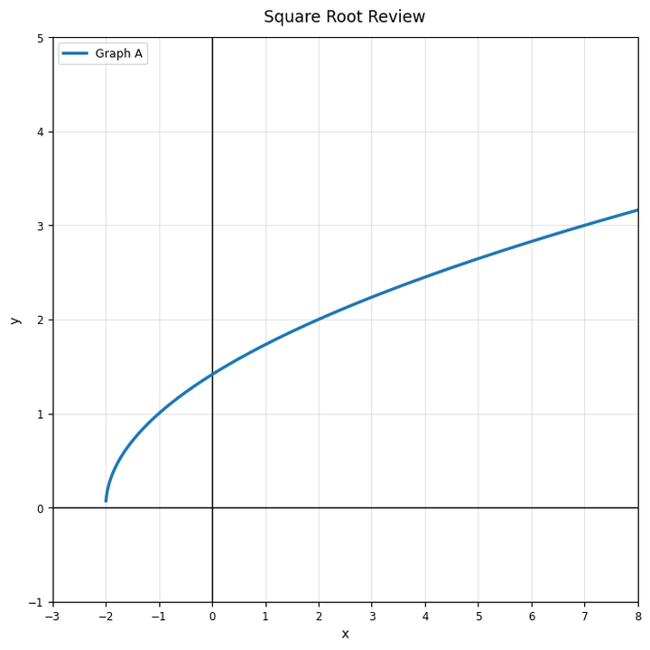
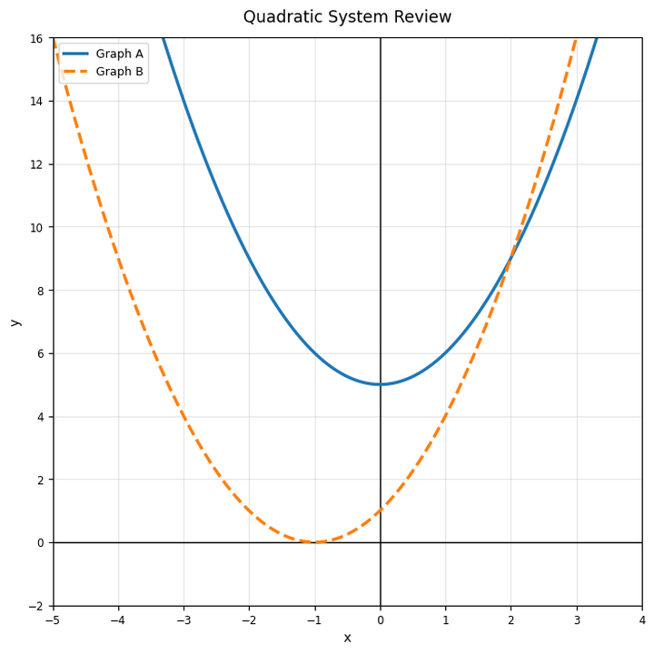
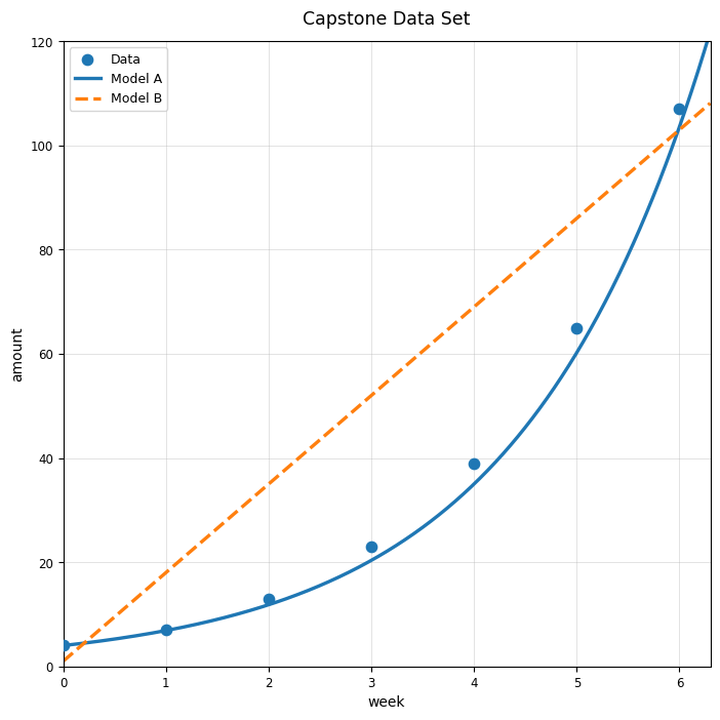
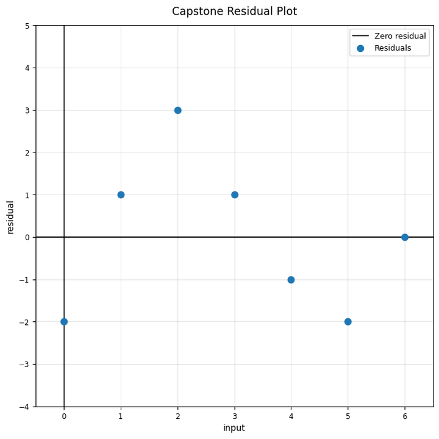
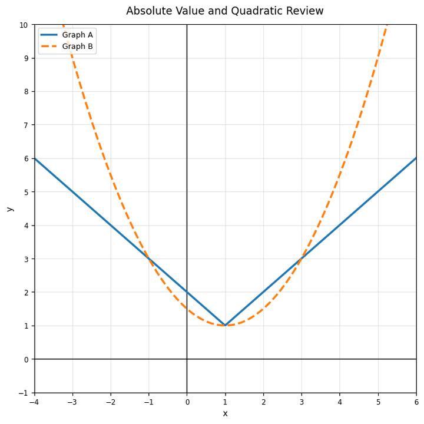

Practice Set 8.5.3
Use the square-root review graph. Identify one feature that makes it different from a line or parabola.

Use the quadratic system graph. Explain what a point where the two graphs cross would represent in a system of equations.

Compare the table and graph. Which representation gives clearer evidence of long-term behavior? Explain.
| $x$ | 0 | 1 | 2 | 3 | 4 |
|---|---|---|---|---|---|
| $y$ | 3 | 5 | 9 | 17 | 33 |

A new business tries three models for the same data: linear, quadratic, and exponential. Describe how you would decide which model to recommend. Include graph, table, context, and limitation evidence.
Use the capstone data set. Identify which model is exponential.

Use the capstone data set. Explain why predicting week $20$ would be risky even if the model fits weeks $0$ through $6$.
Use the residual plot. Explain what would make this residual plot stronger evidence for or against a model.

Use the changing pattern data. Propose a piecewise model strategy and explain what domain each part should cover.

What is the difference between a model prediction and an actual data value?
What does it mean if data curve upward more and more quickly?
Use the capstone data set. Which model gives a larger prediction at week $6$? How can you tell?
Write one limitation statement for using a model based on only seven data points.
In $y=3|x-2|+1$, which number shifts the graph right?
Use the graph. Which graph grows faster as inputs move far from the vertex? Explain.

A student says absolute value and quadratic functions are the same because both can have a minimum. Critique the statement.
Create a table that could fit an absolute value model and explain how the table shows distance from a target.